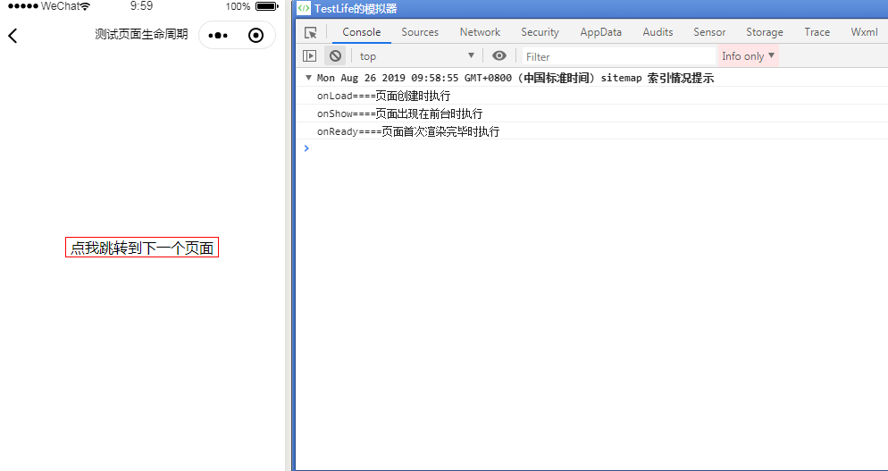
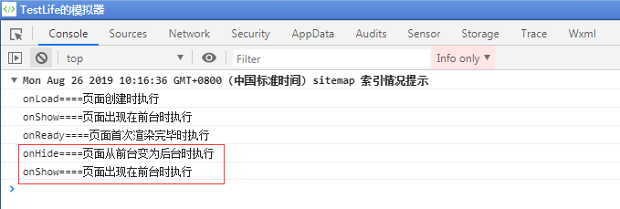
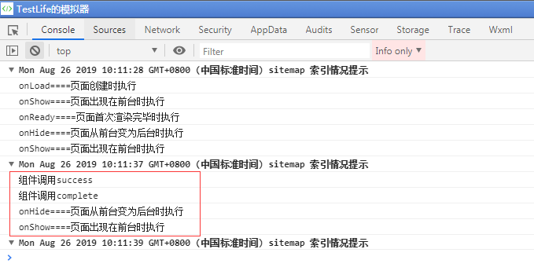
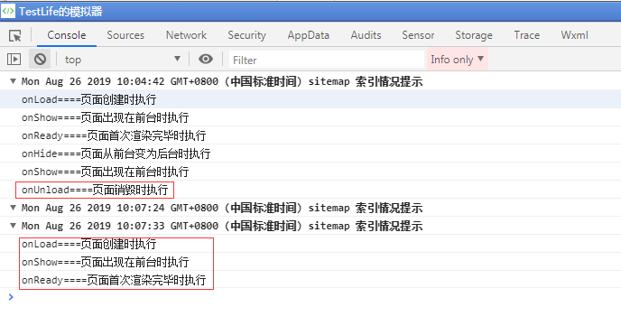
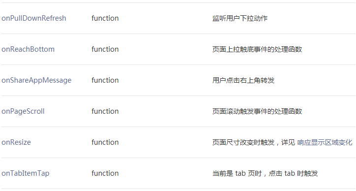

前言：本人是一个初学者，也是第一次写博客，敲键盘的时候还不知道发布后是什么效果，希望内容给其他初学的同学一点帮助，同时加深自己的理解。这篇随笔讲的是Page页面的生命周期，在开发中是基础中的基础，很容易理解。
先给出直达官方的链接：
1、小程序页面生命周期图：https://developers.weixin.qq.com/miniprogram/dev/framework/app-service/page-life-cycle.html。
2、注册页面生命周期的接口：https://developers.weixin.qq.com/miniprogram/dev/reference/api/Page.html
可以直接参考第二个链接，下面是我的测试，使用官方给的hello,world示例，为了验证加入了一个nextPage页面。
log.js
1 Page({
2 data: {
3 logs: []
4 },
5 onLoad: function (options) {
6 // 页面创建时执行
7 console.log("onLoad====页面创建时执行")
8 },
9 onShow: function () {
10 // 页面出现在前台时执行
11 console.log("onShow====页面出现在前台时执行")
12 },
13 onReady: function () {
14 // 页面首次渲染完毕时执行
15 console.log("onReady====页面首次渲染完毕时执行")
16 },
17 onHide: function () {
18 // 页面从前台变为后台时执行
19 console.log("onHide====页面从前台变为后台时执行")
20 },
21 onUnload: function () {
22 // 页面销毁时执行
23 console.log("onUnload====页面销毁时执行")
24 },
25 onPullDownRefresh: function () {
26 // 触发下拉刷新时执行
27 console.log("onPullDownRefresh====触发下拉刷新时执行")
28 },
29 toNextPage:function(){
30 wx.navigateTo({
31 url: '../nextPage/nextPag',
32 success: function (res) { console.log("组件调用success")},
33 fail: function (res) { console.log("组件调用fail")},
34 complete: function (res) { console.log("组件调用complete")},
35 })
36 }
37 })log.json (enablePullDownRefresh是开启下拉刷新)
1 {
2 "navigationBarTitleText": "测试页面生命周期",
3 "usingComponents": {},
4 "enablePullDownRefresh": true,
5 "backgroundTextStyle": "dark"
6 }log.wxml
1 <view bindtap="toNextPage" class="log">点我跳转到下一个页面</view>


额外补充，当调用接口时，成功、失败与完成的回调函数将会这样执行：

总结：
基本上需要注意的就是这些了，再次总结一下容易理解错的地方：
1、页面生命周期和小程序App的生命周期稍有不同，但原理类似，有需要可以看一下官方给出的示例再自己进行测试。https://developers.weixin.qq.com/miniprogram/dev/reference/api/App.html
2、当进入页面时生命周期函数的调用顺序
（1）先执行onLoad（页面创建时执行）
（2）再执行onShow（页面出现在前台时执行）
（3）最后执行onReady（页面首次渲染完毕时执行）
3、点击页面子页面或在该页面切后台，触发的是onHide；子页面返回该页面或切回前台触发的是onShow（可页面周期内可多次）；
4、点击页面父页面会将此页面销毁触发onUnload（页面销毁时执行），通过父页面再次点进该页面时会重新加载页面，依次触发onLoad、onShow、onReady；
5、（未验证）页面生存过程中，onLoad只触发一次，onReady也只触发一次，只是先后不同。
6、其他还有一些生命周期方法，需要在特定条件下执行的。比如：页面缩放时、下拉刷新时，就不一一列举了，可以从前面的官方文档中查找到。

页面生命周期实际上在开发中比较常用，以适应不同的功能需求，作为学习者，我们也需要多加注意这些问题，养成良好的思维习惯。